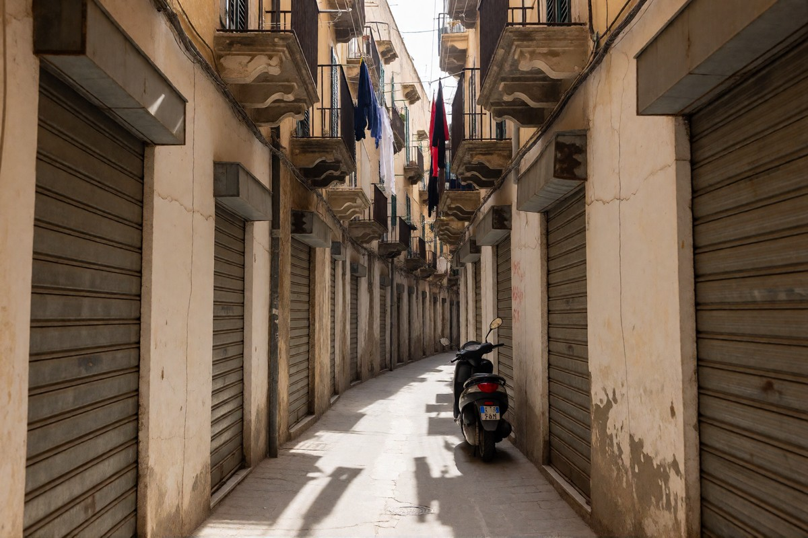

Sicilia · 12 novembre 2026
«Mio fratello non era un boss»: la replica della famiglia Rubino

Tre giorni dopo il funerale che ha fermato il mercato di Ballarò, a Palermo, parla il fratello di Emanuele Rubino: nessuna imposizione ai commercianti, dice, ma un'usanza del quartiere.
di Franco Zanghì
«Mio fratello non era un mafioso e non era un boss.» A dirlo, il 12 novembre 2026, è Giuseppe Rubino, 54 anni, fratello di Emanuele, l'uomo per il cui funerale, tre giorni prima, un intero mercato di Palermo si era fermato.
Parla all'ANSA, e dice di essere rattristato e deluso per il modo in cui i giornali hanno raccontato quel corteo.
Dove e come parla
Siamo a Ballarò, nel cuore di Palermo. Rubino parla sotto il balcone di casa, dove sono affacciati alcuni familiari, davanti allo striscione con la fotografia del fratello, nel vicolo che sbuca in via Maqueda. È da lì che il 9 novembre era partito il corteo funebre: un centinaio di persone, i ciclomotori rombanti davanti, i fuochi d'artificio, la bara portata a spalla lungo la via pedonale fino alla chiesa del Carmine.
Le immagini, finite sui social, avevano fatto reagire il sindaco, la politica regionale e l'arcivescovo di Palermo, Corrado Lorefice.
La versione della famiglia
«Non abbiamo imposto a nessuno di abbassare le saracinesche o di chiudere», dice Giuseppe Rubino all'ANSA. È un'usanza del quartiere, spiega: quando qualcuno muore, la sua bara viene portata nei luoghi a lui cari, e i commercianti, se vogliono, chiudono in segno di cordoglio.
Quale sfida allo Stato, aggiunge: nel corteo, con la maglietta che portava il volto di Emanuele, c'erano anche commercianti del Bangladesh.
Alcuni commercianti, mentre lui parla, annuiscono. Negano le imposizioni e respingono l'immagine di un quartiere sottomesso dalla paura. Un venditore di frutta ricorda Giuseppe La Barbera, anche lui di Ballarò, l'operaio dell'azienda dell'acqua morto con altri quattro colleghi nella strage di Casteldaccia: anche la sua bara, dice, fu portata nel quartiere, e i negozi chiusero. «Noi facciamo così per tutti i figli di Ballarò.»
La famiglia Rubino vive a Ballarò da un secolo: il nonno Santo aprì la prima impresa di pompe funebri del quartiere.
Chi era Emanuele Rubino
Aveva 36 anni. Era stato condannato in primo grado a 12 anni per il tentato omicidio, nel 2016, di un ragazzo gambiano a cui aveva sparato alla testa. Altre condanne erano seguite, fra cui una a 9 anni e mezzo per estorsione a commercianti stranieri. Aveva passato in carcere 13 anni e da circa sei mesi era ai domiciliari per motivi di salute.
Il punto
Da una parte c'è un corteo con fuochi d'artificio e motorini per un uomo condannato per avere sparato alla testa a un ragazzo. Dall'altra una famiglia e dei commercianti che parlano di usanza e di cordoglio, non di paura.
Le due letture non si annullano, e nessuna delle due risponde alla domanda che resta aperta da tre giorni: un'usanza di quartiere basta a spiegare i fuochi d'artificio per chi ha sparato alla testa a un ragazzo?
Fonti
Il funerale, le parole dell'arcivescovo Lorefice, la replica della Regione e la lettera dei residenti di via Maqueda sono raccontati nell'articolo «Ballarò si ferma per il funerale di un pregiudicato», già pubblicato su questo sito.